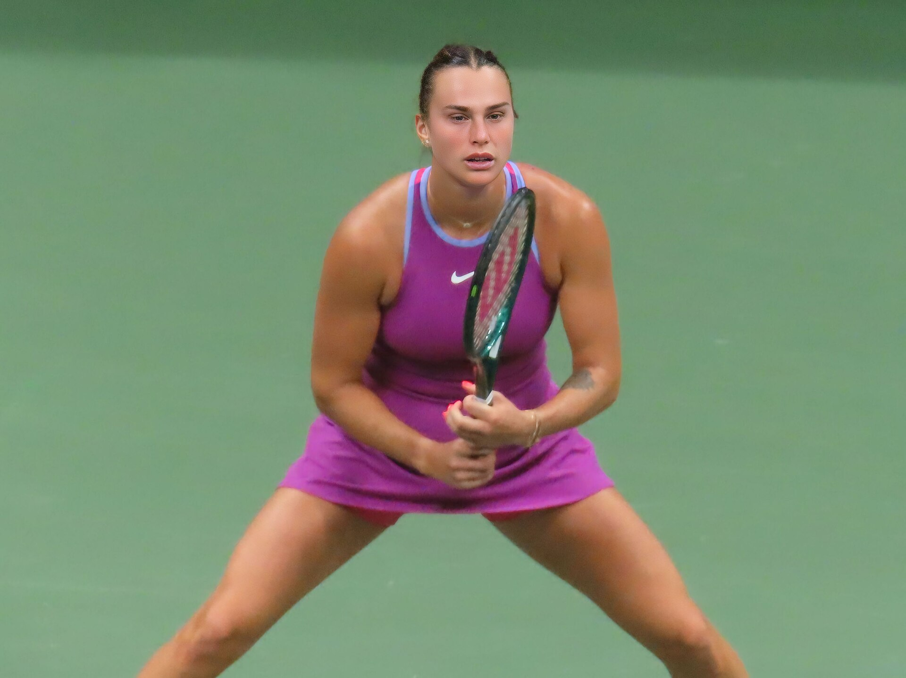

O WTA Wuhan 2026 chegou à sua fase decisiva com uma combinação de tradição, grandes jogadoras e resultados surpreendentes. Disputado entre 12 e 18 de outubro, na China, o torneio ocupa uma posição importante no calendário feminino, especialmente por acontecer nas últimas semanas da temporada regular.
A competição é realizada no Optics Valley International Tennis Centre, em Wuhan, na província chinesa de Hubei. As partidas acontecem em quadras duras ao ar livre, com disputas de simples e duplas. A estrutura inclui sete quadras, entre elas a principal, com capacidade para aproximadamente 15 mil espectadores.
Na edição deste, o evento ganhou um capítulo especial logo nas primeiras rodadas. Aryna Sabalenka, tricampeã do torneio, foi eliminada. Jessica Pegula, finalista de 2025 e segunda cabeça de chave, também se despediu precocemente.
Sabalenka sofre eliminação histórica
Uma das notícias mais marcantes da edição de 2026 aconteceu em 14 de outubro, quando Aryna Sabalenka enfrentou Ann Li pela segunda rodada.
A norte-americana venceu de virada por 3/6, 6/4 e 7/6(5), depois de 2 horas e 27 minutos de confronto.
Sabalenka começou melhor, conquistou o primeiro set e chegou a abrir 4 a 2 na segunda parcial. Entretanto, Ann Li reagiu, equilibrou as trocas de bola e levou a partida ao terceiro set.
A etapa decisiva teve um roteiro especialmente dramático. Li chegou a abrir 5 a 2, mas Sabalenka reagiu e salvou nove match points antes de a adversária finalmente confirmar a vitória na décima oportunidade.
O resultado representou a maior vitória da carreira de Ann Li considerando a posição da adversária no ranking. Também encerrou a campanha da principal cabeça de chave de maneira incomum.
Sabalenka havia conquistado o WTA Wuhan em 2018, 2019 e 2024. Até a edição de 2026, a bielorrussa sempre havia alcançado pelo menos as semifinais nas participações anteriores.
Pegula cai após desperdiçar match points
A eliminação de Jessica Pegula foi outro resultado de enorme repercussão.
A norte-americana, vice-campeã de Wuhan em 2025, enfrentou Jelena Ostapenko e venceu o primeiro set por 6/2. Parecia encaminhar a classificação, mas a adversária encontrou forças para reagir.
Ostapenko salvou três match points no tie-break da segunda parcial, venceu o desempate por 9 a 7 e confirmou a virada no terceiro set.
O placar final foi de 2/6, 7/6(7) e 6/3 para a letã, em 2 horas e 23 minutos de jogo.
Campeã de Roland Garros em 2017, Ostapenko mostrou mais uma vez sua característica de jogo ofensivo, com golpes potentes e disposição para arriscar nos momentos de maior pressão.
A vitória também teve peso estatístico. Foi o terceiro triunfo da letã contra uma adversária do top 10 na temporada de 2026 e o 28º de sua carreira.
Para Pegula, a eliminação significou uma despedida antecipada de um torneio no qual havia disputado a final no ano anterior.
As derrotas das duas primeiras cabeças de chave na mesma rodada transformaram o cenário competitivo de Wuhan, ampliando as oportunidades de outras jogadoras na busca pelo título.
Outras atletas que avançam na competição
Enquanto algumas favoritas se despediram, outras tenistas importantes confirmaram presença nas oitavas de final.
Iga Swiatek, sétima cabeça de chave, derrotou a compatriota Magdalena Frech por 6/2 e 6/1, em sua estreia na chave principal.
A vitória teve significado especial para a polonesa, que alcançou seu 40º triunfo da temporada de 2026.
Swiatek também chegou a 149 vitórias em torneios WTA 1000, ultrapassando Serena Williams na estatística histórica da categoria desde sua criação, em 2009.
Elina Svitolina, quinta cabeça de chave, encontrou mais resistência diante de Liudmila Samsonova.
A ucraniana venceu por 6/2, 5/7 e 6/2, depois de perder uma vantagem durante o segundo set e precisar recuperar o controle da partida na parcial decisiva.
As duas jogadoras chegaram ao torneio com um objetivo adicional: conquistar pontos importantes na disputa por vagas no WTA Finals, competição que reúne as principais atletas da temporada.
As ausências importantes
O torneio também foi marcado por desistências de atletas relevantes do circuito.
Elena Rybakina, que ocupava a liderança do ranking mundial antes da competição, retirou-se por um problema no pé. Coco Gauff, campeã de 2025, não defendeu seu título após informar fadiga.
Duas desistências tiveram relação direta com a etapa anterior da gira asiática: Zheng Qinwen e Mirra Andreeva, finalistas do WTA 1000 de Pequim.
Zheng conquistou o título em Pequim ao vencer Andreeva por 7/5 e 6/4, mas desistiu de Wuhan por um problema no ombro direito. Andreeva também deixou a competição após uma alteração em sua programação.
A ausência de Zheng foi especialmente significativa por sua ligação com Wuhan, cidade onde desenvolveu parte importante de sua trajetória no tênis.
Próximos jogos das oitavas de final
A organização do WTA Wuhan 2026 definiu os oito confrontos da chave de simples, programados para quinta-feira, 15 de outubro.
Os confrontos das oitavas de final, com horários de Brasília:
- Karolina Muchova x Diana Shnaider — quinta-feira, 15 de outubro, às 0h.
- Mia Pohánková x Maria Sakkari — quinta-feira, 15 de outubro, às 0h.
- Iva Jovic x Maja Chwalińska — quinta-feira, 15 de outubro, não antes de 1h.
- Elina Svitolina x Hanyu Guo — quinta-feira, 15 de outubro, após Muchova x Shnaider.
- Jasmine Paolini x Sonay Kartal — quinta-feira, 15 de outubro, após Jovic x Chwalińska.
- Leylah Fernandez x Jelena Ostapenko — quinta-feira, 15 de outubro, não antes de 4h30.
- Ashlyn Krueger x Iga Swiatek — quinta-feira, 15 de outubro, não antes de 8h.
- Ann Li x Janice Tjen — quinta-feira, 15 de outubro, após Krueger x Swiatek.
Os horários indicados como sequência dependem do encerramento dos confrontos anteriores na mesma quadra. A programação pode sofrer ajustes conforme a duração das partidas e eventuais alterações determinadas pela organização.
Luisa Stefani representa o Brasil na chave de duplas
Além dos confrontos de simples, o WTA Wuhan 2026 também terá presença brasileira na disputa de duplas.
Luisa Stefani forma parceria com a canadense Gabriela Dabrowski e enfrentará a norueguesa Ulrikke Eikeri e a norte-americana Quinn Gleason nas oitavas de final. A parceria chega à competição após conquistar o WTA 1000 de Pequim.
A partida está programada para quinta-feira, 15 de outubro, na quadra 2, previsto para começar à 1h30 de Brasília.
Onde assistir ao WTA Wuhan 2026 ao vivo
O torneio tem transmissão no Brasil pelos canais ESPN, na televisão por assinatura, e pela plataforma de streaming Disney+. Como Wuhan está 11 horas à frente de Brasília, os jogos acontecem principalmente durante a madrugada e a manhã no horário brasileiro. A programação específica pode variar conforme a rodada e a definição dos confrontos.
Premiação e pontos no ranking do WTA Wuhan 2026
A competição apresenta uma premiação total anunciada de US$ 4.088.211.
Distribuição oficial de pontos e premiação:
- Campeã: 1.000 pontos e US$ 665.000
- Vice-campeã: 650 pontos e US$ 385.001
- Semifinalistas: 390 pontos e US$ 197.000
- Quartas de final: 215 pontos e US$ 98.500
- Terceira rodada: 120 pontos e US$ 49.250
- Segunda rodada: 65 pontos e US$ 26.000
- Primeira rodada: 10 pontos e US$ 18.300
Os valores demonstram a importância esportiva e financeira da competição.
A pontuação conquistada pode influenciar posições no ranking, cabeças de chave em competições posteriores e a corrida pelas últimas vagas disponíveis no WTA Finals.
Calendário do WTA Wuhan 2026: datas até a final
A organização programou a chave principal entre os dias 12 e 18 de outubro.
O calendário:
- 12 e 13 de outubro: primeira rodada
- 14 de outubro: segunda rodada
- 15 de outubro: oitavas de final
- 16 de outubro: quartas de final
- 17 de outubro: semifinais
- 18 de outubro: final
A decisão de simples está programada para domingo, 18 de outubro, para as 7h30, pelo horário de Brasília.
Os horários específicos das demais partidas dependem da programação oficial de cada rodada.
Como funciona o formato do WTA Wuhan 2026
A chave principal de simples conta com 56 jogadoras, enquanto a competição de duplas reúne 28 parcerias.
No torneio de simples, as oito principais cabeças de chave recebem uma vantagem prevista no regulamento: avançam diretamente à segunda rodada, sem precisar disputar a primeira partida da chave principal.
As demais participantes começam na rodada inicial, e os confrontos seguem em sistema eliminatório. Quem perde uma partida deixa a disputa pelo título.
A estrutura permite que tenistas provenientes do qualifying, convidadas e participantes de diferentes posições no ranking enfrentem adversárias mais bem classificadas já nas primeiras fases.
História do Wuhan Open e principais campeãs
O torneio foi criado em 2014 e se consolidou como uma das competições importantes do circuito feminino na Ásia.
Após uma interrupção de quatro anos, o torneio retornou ao calendário em 2024, retomando seu espaço entre as grandes competições da WTA.
Aryna Sabalenka ocupa posição especial na história do evento, com três conquistas de simples: 2018, 2019 e 2024.
Seu desempenho transformou Wuhan em um dos torneios de maior sucesso de sua carreira.
Ao longo das edições, o torneio reuniu jogadoras de diferentes gerações e acompanhou mudanças importantes no circuito feminino, incluindo a ascensão de novas estrelas e a consolidação de campeãs de Grand Slam.
A estrutura moderna, as quadras duras e a posição no calendário tornaram Wuhan uma etapa de prestígio para atletas que procuram encerrar o ano em alta.
O piso duro favorece disputas intensas e coloca à prova a eficiência do saque, a devolução, a movimentação e a capacidade de controlar pontos sob pressão.
Independentemente de quem conquistar o título em 18 de outubro, a edição de 2026 já possui acontecimentos relevantes para a história do torneio. A vitória de Ann Li sobre Sabalenka, a reação de Ostapenko contra Pegula e a disputa por pontos na reta final da temporada mostram por que o WTA Wuhan permanece como uma das etapas de maior interesse do tênis feminino internacional.